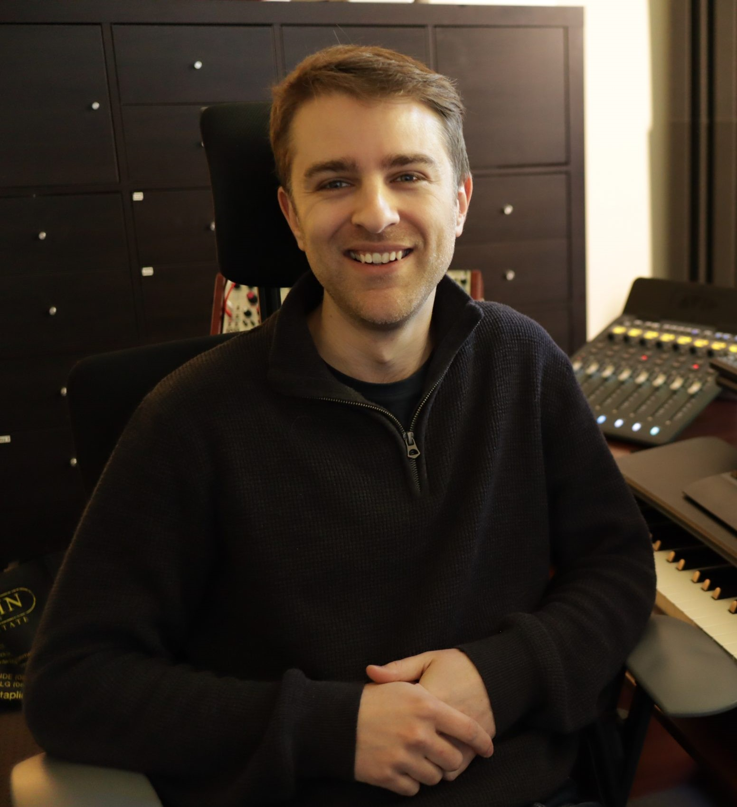

Christopher Larkin es un compositor de música australiano para videojuegos, cine y televisión; y es mayormente conocido por su trabajo en Hollow Knight y su secuela Hollow Knight: Silksong. Algunas de sus otras obras incluyen Pac-Man 256, Outfolded, TOHU y Hacknet.
He considerado que es un artista relevante por que cualquiera que haya jugado a los juegos en los que está sus composiciones sabra que la musica es una de las mejores cosas del juego y las vuelve inolvidables.